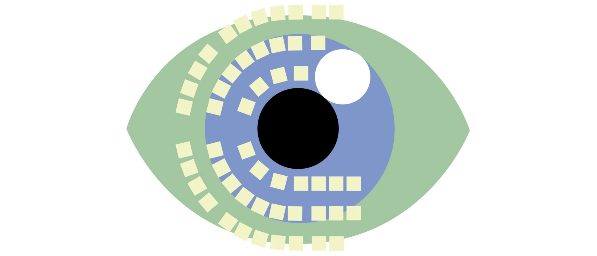
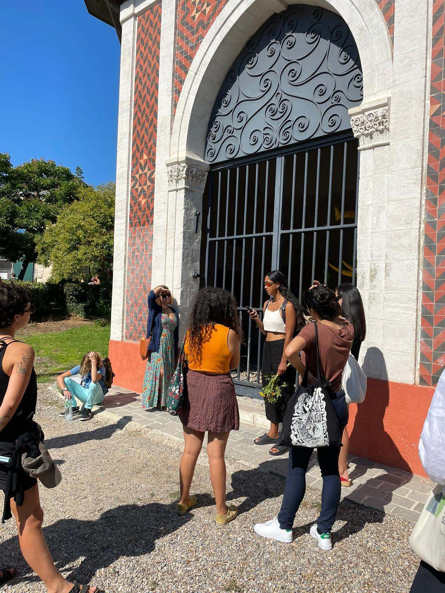
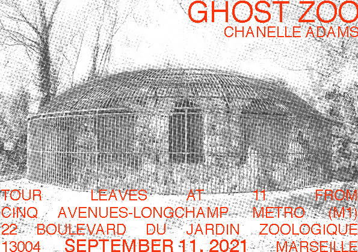
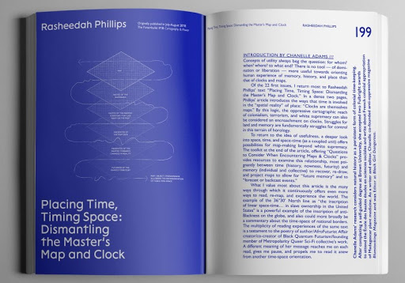
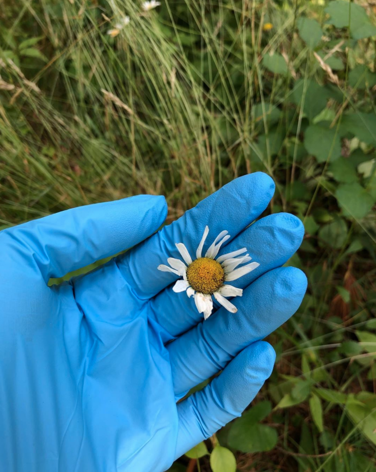
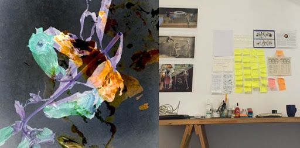
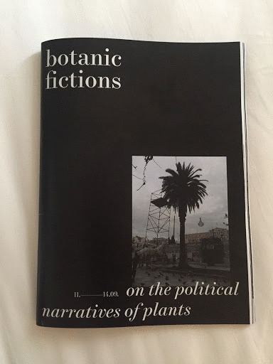
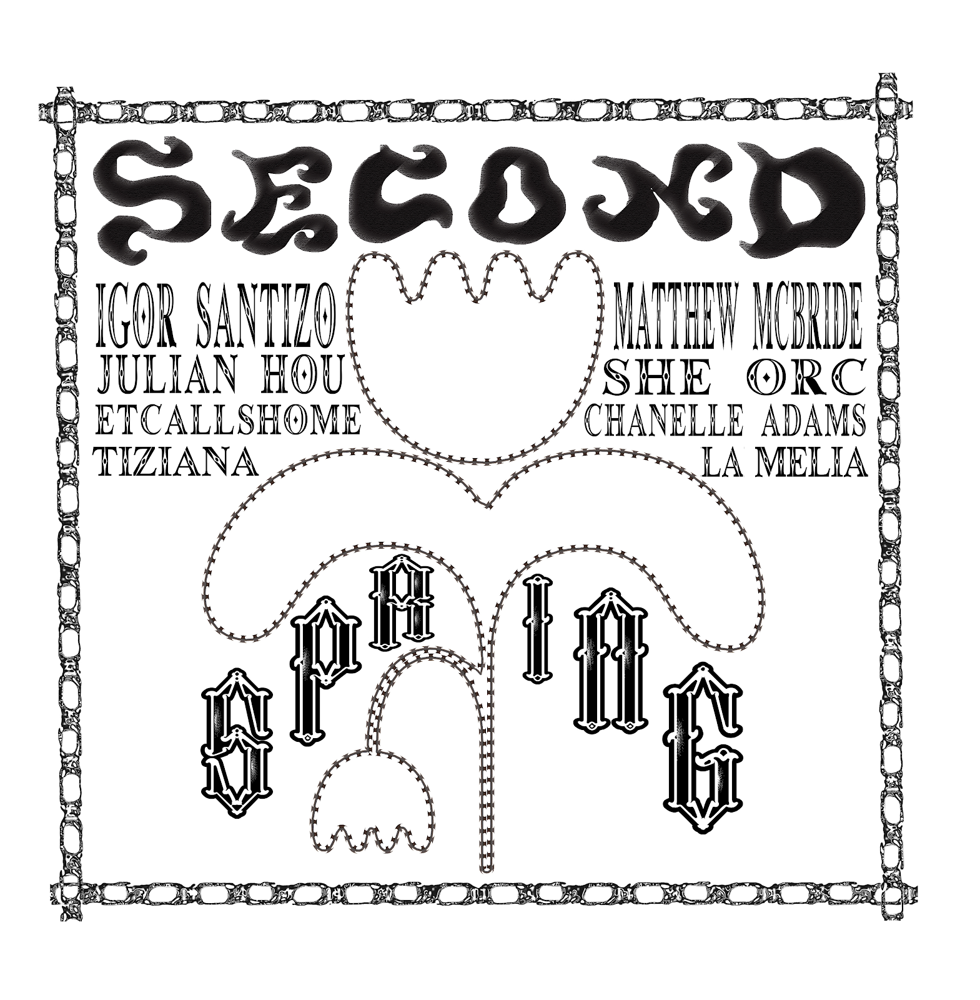
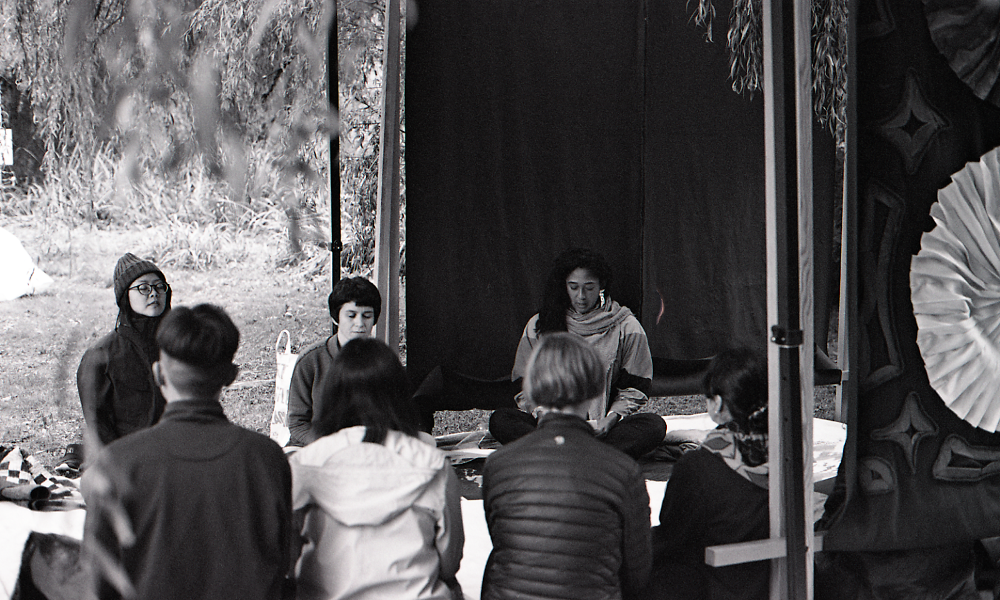

Updated December 2021
I gave a virtual talk at La Loge's "Constellations for the Future: Stories on Ecology, Kinship and Sciences." How might thinking with plant medicine, colonial science archives, and the Malagasy independence movement generate a sense of possibility for the future?
 In September 2021, I led a haunted walk through the Marseille Funny Zoo in Longchamps Park.

Ghosts rupture time by reminding us of the unfaced, unrestituted, and unresolved. Part meditative experience, part ghost tour, this performance is a practice in noticing colonial hauntologies in everyday city landscapes and an experiment in face to face encounters with ghosts. I invited participants to think with these ghosts by re-relating with haunt to release the future from historical horrors.
I wrote about a small country with Big Pharma energy for The Drift, "The DJ and the Miracle Cure | The Perils of Postcolonial Medicine in Madagascar."
In September 2020, I facilitated “How To Use Meditation As A Technology For Liberation, Healing, and Reparations” to 50 participants at Black Womxn Time Camp 004 and contributed to the accompanying zine published by Black Quantum Futurism, whose text "Placing Time, Timing Space” I reviewed for the 2019 Chicago Architecture Biennial.
I am currently a writer in residence for the PLATFORM 2020: Utterances from the Chorus co-curated by Okwui Okpokwasili and Judy Hussie-Taylor with forthcoming texts on rehearsals of grief and proximity to the veil. I shared a guided meditation “archive medicine” (audio/text). This offering describes research as ritual and offers the possibility of making medicine in the archive
During NYC lockdown in March, I launched a plant selfie content account. 
In 2018, I was an artist in Residence at the Visual Arts Network of South Africa in Johannesburg. My closing studio, “Botany of Death” opened my practice of mapping linkages (past and present) between colonial natural history and its afterlives (diaspora, memory, epistemologies, etc) in un-disciplined, unruly, and unarticulated forms. 
This past spring and summer, I was a guest on the Bea Bo show on Balamii radio. The epistolary soundscapes are archived here.
My text on mold and men, fungus and fugitivity, “The Archives Need to Breathe” ( Human x Nature 2018), was republished in 2020 by Paprika! At Yale and was included in Nomadic Archivist Project Co-founder Steven G. Fullwood’s event at NYU “The Not Obvious: Black Archives in Other Places.”
I delivered an artist talk “Plants As Propaganda" to an audience of plants and people in Athens, Greece at the Botanic Fictions, On the Political Narratives of Plants symposium curated by Anja Luckenkemper at the Goethe Institut.  “Plant Propaganda” contributions to the Botanic Fictions, On the Political Narratives of Plants zine.
As part of Second Spring in October 2019, I facilitated a group through a ceremonious experiment in transmission “Possessive poisson poison" around Trout Lake on the unceded territory of the Coast Salish peoples currently known as Vancouver. We explored relaying information, not through paper trails but hidden communications and transference of impressions. These events were curated by Julian Hou with Vivo Media Arts.  